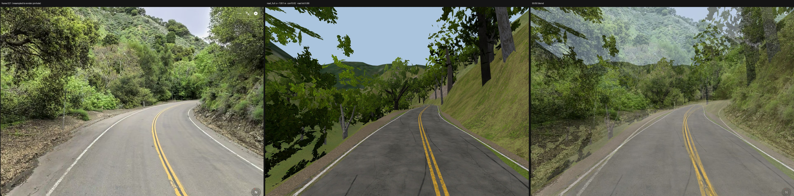
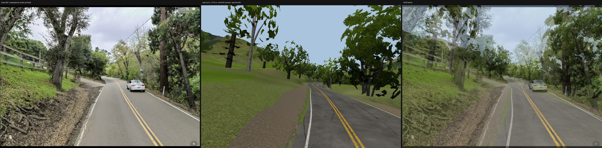
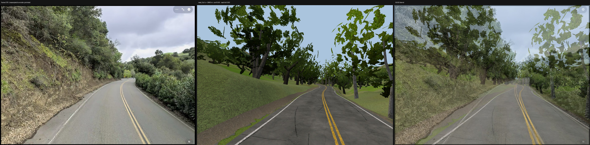
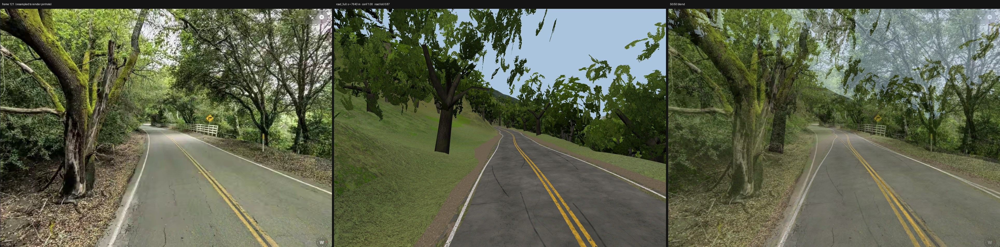
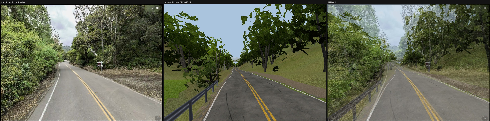
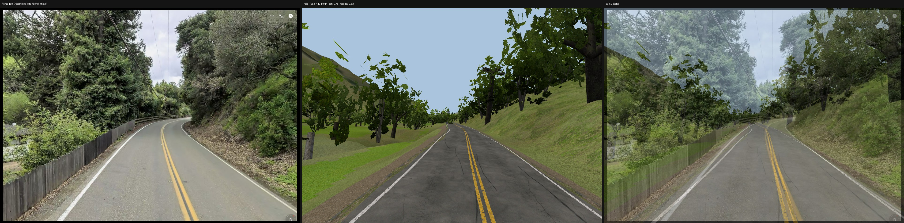
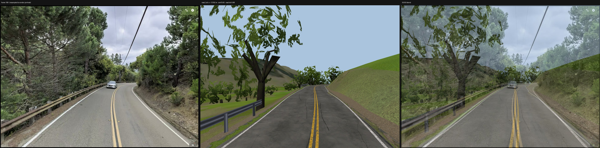
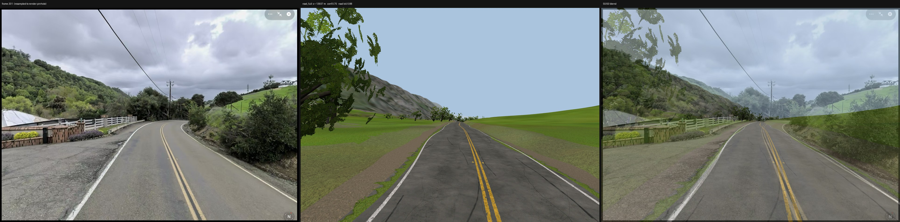

Left: frame resampled to the render's pinhole camera; middle: render from the registered pose (vertical FOV
75.0°); right: 50/50 blend. Frames are rectilinear 360-viewer screenshots; camera calibrated jointly
(docs/phase2/CAMERA.md): f = 957 px, principal-point offset (+0, +0) px, k1 = +0.000,
mount height 2.10 m.
Litmus (dev5)
Poses: data/scene/poses.json (dev5 registration against Mask2Former segmentation of the
GoPro frames, 44 of 219 frames pinned by eye), converted by scripts/p2/27_litmus_poses.py. Frames: one per
1/8 of the road by station, drawn with seed 5 from the 147 frames with conf ≥ 0.6
not in the known-misaligned list (26, 62, 63, 64, 66, 70, 71, 72, 76, 106, 138, 178, 180, 186, 187). Frame list is fixed for later builds.
Pose confidence: 021: 0.82, 065: 0.84, 078: 0.60, 121: 1.00, 132: 1.00, 158: 0.78, 189: 0.65, 201: 0.70. The dev4 sheet (old road-ribbon fit) is replaced.

Frame 021 · s = 1301 m · lateral -0.60 m · eye 2.25 m · yaw +6.6° pitch +4.9° roll -2.6° · pose conf 0.82, seg score 0.46, road IoU 0.86

Frame 065 · s = 3710 m · lateral -1.53 m · eye 2.17 m · yaw +13.0° pitch +3.4° roll +5.5° · pose conf 0.84 (pinned by eye), seg score 0.56, road IoU 0.83

Frame 078 · s = 3960 m · lateral -0.84 m · eye 1.97 m · yaw +13.9° pitch +5.8° roll +4.0° · pose conf 0.60, seg score 0.54, road IoU 0.83

Frame 121 · s = 7643 m · lateral -1.45 m · eye 2.25 m · yaw +5.8° pitch -7.1° roll +0.4° · pose conf 1.00, seg score 0.50, road IoU 0.87

Frame 132 · s = 8629 m · lateral -1.12 m · eye 2.10 m · yaw -3.3° pitch -1.6° roll -2.5° · pose conf 1.00, seg score 0.65, road IoU 0.89

Frame 158 · s = 10470 m · lateral -0.87 m · eye 2.22 m · yaw +2.8° pitch +0.7° roll +5.6° · pose conf 0.78, seg score 0.44, road IoU 0.82

Frame 189 · s = 13182 m · lateral +0.39 m · eye 2.05 m · yaw +13.9° pitch +3.5° roll -4.0° · pose conf 0.65, seg score 0.46, road IoU 0.88

Frame 201 · s = 13937 m · lateral -0.78 m · eye 2.14 m · yaw +9.2° pitch +1.1° roll +6.9° · pose conf 0.70, seg score 0.51, road IoU 0.88